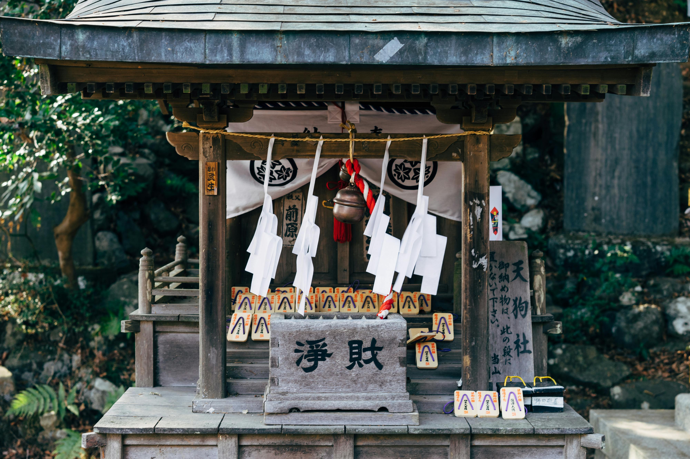

Japan’s culture is deeply rooted in respect for nature, spirituality, and harmony, as seen in its traditional arts like tea ceremonies, calligraphy, and flower arranging. The country’s unique aesthetic is reflected in its meticulously designed gardens, stunning architecture, and delicate crafts such as ceramics and textiles. Festivals like Hanami (cherry blossom viewing) and Gion Matsuri celebrate the country’s connection to the changing seasons and showcase vibrant cultural performances. Despite its rapid modernization, Japan preserves its heritage, with cities like Kyoto and Nara offering a glimpse into its feudal past through ancient temples, shrines, and wooden townhouses.
Japan’s history spans thousands of years, beginning with early human settlement and culminating in its rise as a global power. From the influential Yamato dynasty in the 4th century to the shogunate era, which saw powerful military leaders governing the country, Japan has maintained a strong sense of national identity. The Meiji Restoration of the 19th century marked Japan’s transition from isolation to rapid industrialization, transforming it into a modern empire. After its defeat in World War II, Japan rebuilt itself into one of the world’s leading economies, while maintaining its rich cultural heritage. Today, Japan seamlessly blends the old and the new, offering visitors a unique window into a fascinating, evolving history.
Learn More


